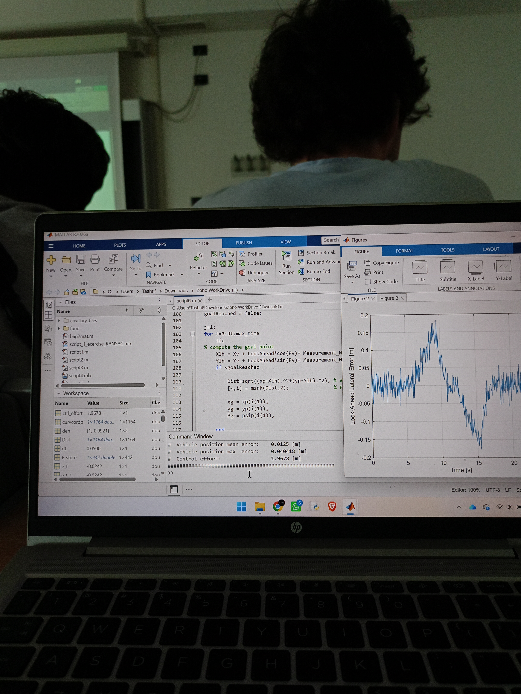
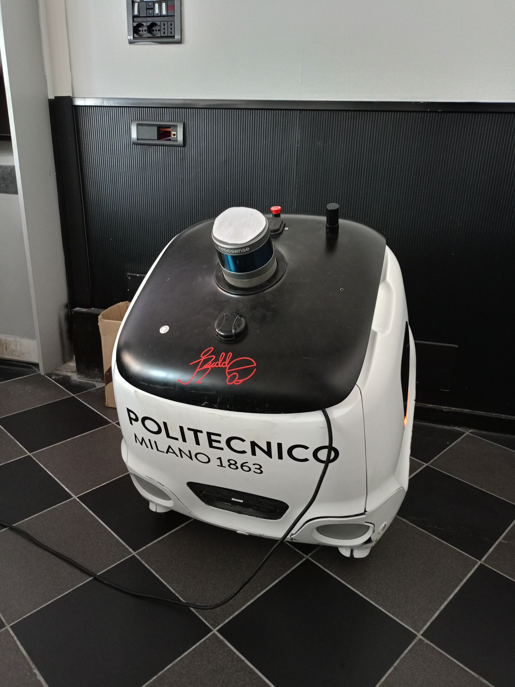

The Premise
One week, four questions every self-driving car has to answer
How does a car know what's around it? How does it know exactly where it is? How does it decide where to go? And how does it actually move there, smoothly and safely? Those four questions are the entire field of autonomous driving compressed into a single sentence — and they were also the exact structure of TechCamp 2026: Intelligent and Autonomous Vehicles, a week-long program I attended at Politecnico di Milano, Campus Leonardo.
For five days — June 22 to June 26 — the course ran 09:30 to 16:30, entirely in English, for a total of 30 hours. It was structured around a rhythm I'd never experienced before in a single course: real university-level theory in the morning, and real hardware in the afternoon.
"By Wednesday I stopped thinking of perception, localization, planning, and control as four separate topics — they're really four answers to the same question a car asks itself every few milliseconds: what do I do next?"
The Daily Rhythm
Theory in the morning, hardware in the afternoon
Every day followed the same logic, and that consistency is what made the week work. Mornings were dense — proper university-level lectures on the mathematics and engineering behind autonomous systems, taught entirely in English by Politecnico faculty. Afternoons were where that math stopped being abstract: we opened laptops, wrote MATLAB code, and tested it directly against the behavior of a real vehicle.
The Core Curriculum
Four modules, one driving stack
The week was built around the four pillars that make up any real autonomous driving stack. Each one builds on the last — you can't plan a path if you don't know where you are, and you can't know where you are if you can't sense the world around you.
From Equations to Motion
Where the math actually moves
The afternoons were the part of TechCamp that made everything click. We wrote and tested our own algorithms in MATLAB, watching the same equations from the morning's lecture turn into something that visibly moved on screen — a simulated trajectory, a corrected position estimate, a re-routed path around an obstacle.

Code on a laptop screen is convincing, but it's not the same as code that has to deal with a real, physical vehicle. That's what made our main lab platform, YAPE — Politecnico's micro-autonomous delivery vehicle — so valuable. Every afternoon, we tested our perception, localization, and control logic directly on it, which meant immediately confronting the gap between "this works in simulation" and "this works when a real motor, real sensor noise, and real friction get involved."

Thursday's Highlight
The Maserati that races itself
Thursday broke the week's rhythm in the best way: instead of our usual classroom and lab setup, we visited Politecnico's cutting-edge autonomous driving research laboratory. It's one thing to study perception and control as separate modules; it's another to walk into a lab and see them combined inside a vehicle built for real competition.
The centerpiece of the visit was a Maserati sports car that the university had completely re-engineered to drive itself — no human input, sensors and compute packed where the cabin used to be purely mechanical. This wasn't a one-off prototype gathering dust: this exact vehicle has competed in prestigious international autonomous racing competitions, which made every module we'd studied that week suddenly very concrete. The perception system on that car has to identify a track boundary at racing speed. The localization has to hold up under vibration and g-force. The control has to execute, not just suggest.

The Takeaway
Thirty hours that reframed how I see a car
I came into TechCamp 2026 thinking of autonomous vehicles as one big, somewhat mysterious system. I left with a clear mental model: sense, locate, plan, control, repeat — and a much better instinct for where the genuinely hard engineering problems live inside that loop. Coding the algorithms myself, then watching YAPE execute them, then seeing the same ideas pushed to their limit in a self-driving race car, is the kind of progression that no textbook chapter can substitute for.
The week closed on June 26 with a Certificate of Participation, confirming completion of the 30-hour course, signed by Scientific Director Mara Tanelli.